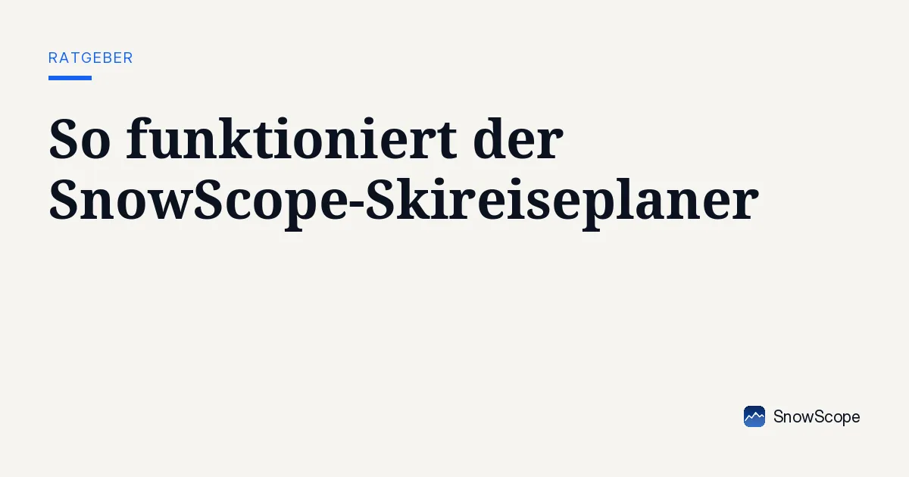
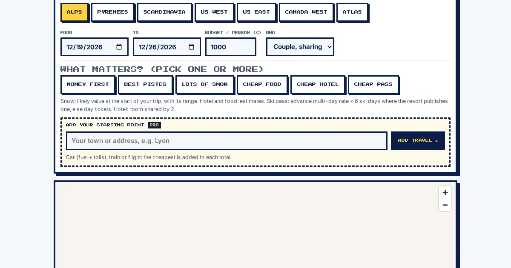
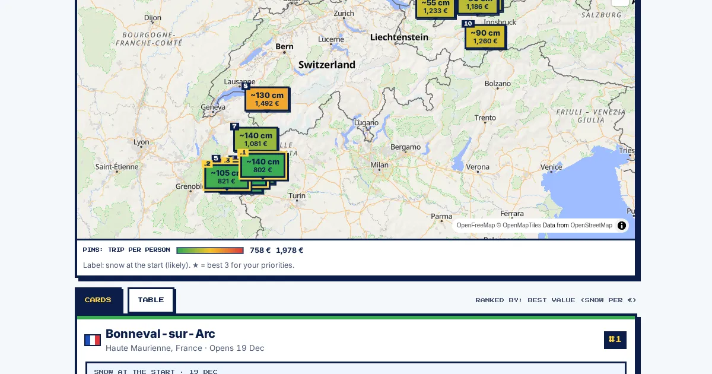
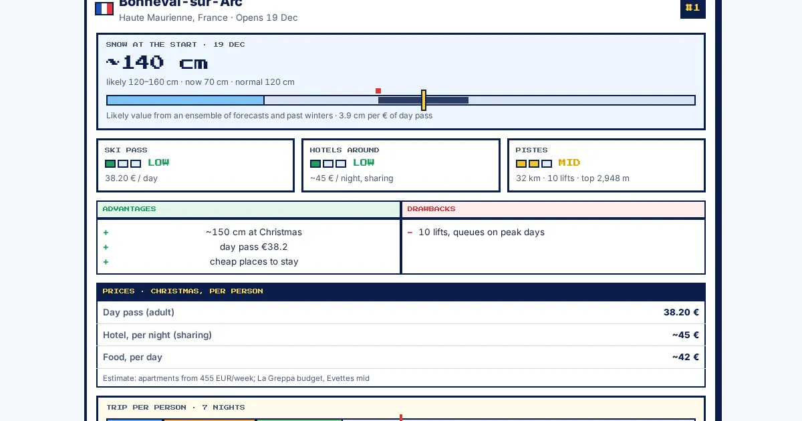

So funktioniert der SnowScope-Skireiseplaner
Der SnowScope-Skireiseplaner beantwortet eine Frage: Wo bekomme ich für mein Geld und meine Daten das beste Skifahren? Sie wählen eine Region, Ihre Daten, ein Budget pro Person und was Ihnen wichtig ist. Jedes Skigebiet der Region bekommt dann eine wahrscheinliche Schneehöhe für Ihren ersten Tag, eine Reisesumme pro Person und die Chalets und Hotels rundherum, bereit zum Buchen. Dieser Leitfaden führt durch die Normalansicht, die Tabelle, den Spielmodus und die Bedeutung jeder Zahl.
Die Live-Schneeprognose für Schneeregionen in der SnowScope-AppSchneehöhen, Pulverschnee-Alarme und 3D-Karte, gratis.
Schritt 1: Region, Daten, Budget, Gruppe, Prioritäten
Öffnen Sie den Planer mit dem Knopf „Plan ski trip“ oben auf jeder SnowScope-Seite. Die Normalansicht öffnet sich standardmäßig. Der erste Block enthält die Bedienung: die Regions-Chips (Alpen, Pyrenäen, Skandinavien, US-Westen, US-Osten, Kanada-Westen und Atlas, 7 Regionen insgesamt), die erste und die letzte Nacht der Reise, Ihr Budget pro Person in Euro und wer mitfährt (allein im eigenen Zimmer, ein Paar im geteilten Zimmer oder eine Familie mit 4 Personen).
Unter den Daten liegen die Prioritäts-Chips: Geld zuerst, beste Pisten, viel Schnee, günstiges Essen, günstiges Hotel, günstiger Skipass. Wählen Sie einen oder mehrere. Ohne Auswahl werden die Skigebiete nach Schnee pro Euro Tageskarte gereiht; mit Chips zählt jeder gleich viel und die Reihung folgt Ihrer Mischung. Jede Änderung rechnet den Plan sofort neu, auf der Karte, in den Karten und in der Tabelle.

Schritt 2: die Karte lesen
Die Karte hat denselben Stil wie die SnowScope-Startkarte. Jedes Skigebiet ist ein Pin, gefärbt nach dem Reisepreis pro Person, grün für das günstigste und rot für das teuerste der Region. Die Beschriftung zeigt die wahrscheinliche Schneehöhe am ersten Tag und die Reisesumme. Die 3 besten Skigebiete für Ihre Prioritäten tragen einen Stern und bleiben oben, wo sich Pins drängen. Tippen Sie auf einen Pin, um zu seiner Karte zu springen.
Die Legende unter der Karte zeigt die Preisskala der Region für Ihre Daten, sodass Sie auf einen Blick sehen, ob der Abstand zwischen der günstigsten und der teuersten Woche klein oder groß ist.

Schritt 3: die gereihten Karten und die Tabelle
Unter der Karte folgen die Skigebiete als Karten in der Reihenfolge der Reihung. Jede Karte zeigt den Schneeblock (wahrscheinlicher Wert, wahrscheinliche Spanne, Schnee jetzt und die normale Höhe an diesem Datum), drei Anzeigen für Skipass, Hotels rundherum und Pisten, Vorteile und Nachteile, eine Preistabelle und den Reisebalken: Skipass, Nächte und Essen nebeneinander gegen Ihr Budget, mit dem Geld, das übrig bleibt oder fehlt. Die Chalets und Hotels rund um das Skigebiet sind mit der Entfernung zu den Liften und einem BUCHEN-Link für Ihre Daten aufgelistet; PREISKARTE öffnet auf Wunsch eine Live-Preiskarte.
Lieber Zahlen in Zeilen? Wechseln Sie zu TABELLE. Jede Spalte sortiert mit einem Tipp: Tageskarte, Nacht, Essen pro Tag, Reisesumme, verbleibendes Geld, Schnee jetzt, Schnee zum Start, Pisten. Tippen Sie auf eine Zeile, um ihre ganze Karte unter der Tabelle zu öffnen.

Was die Zahlen bedeuten
Schnee jetzt ist die heutige Höhe auf den oberen Pisten des Skigebiets, derselbe Wert wie auf der Live-Karte. Schnee zum Start ist eine Projektion: ein wahrscheinlicher Wert mit einer wahrscheinlichen Spanne. Sie verbindet die heutige Schneedecke, ein Ensemble von Vorhersagen so weit es reicht, und wie sich der Schnee bis zu Ihrem Datum in den vergangenen Wintern am selben Ort und in derselben Höhe verändert hat. Die Spanne sind die mittleren 60 % dieser Ergebnisse. Je weiter Ihre Daten entfernt sind, desto breiter die Spanne; der Planer nimmt Daten bis 6 Monate im Voraus und wird jeden Tag aufgefrischt.
Der Skipass nutzt den Mehrtages-Vorverkaufspreis, wo das Skigebiet einen veröffentlicht, mal Ihre Skitage (7 Nächte ergeben 6 Skitage, ein Tag für die Anreise), sonst Tageskarten. Hotel und Essen sind Schätzungen pro Person: ein Zimmer oder eine Wohnung, von Ihrer Gruppe geteilt, nahe den Liften, Frühstück, ein Mittagessen auf der Piste und ein einfaches Abendessen. Sie dienen dem Vergleich der Skigebiete, nicht als Ersatz für ein Angebot. Die Reisesumme ist Skipass plus Nächte plus Essen pro Person, verglichen mit Ihrem Budget; mit Pro kommt die Anreise dazu.
Spielmodus: der Ski Grand Prix
Tippen Sie auf „Als Spiel spielen“, und derselbe Planer wird zu einem einzigen Bildschirm: die Pixelkarte der Alpen mit jedem Skigebiet als Pin, dieselben Chips, Daten und Budget, und ein START-Knopf. Die Skigebiete fahren dann Nacht für Nacht ein Rennen durch Ihre Reise; ein Skigebiet, das Ihr Budget aufbraucht, scheidet an dem Tag aus, an dem das Geld alle ist. Der Ergebnisbildschirm zeigt das Podium, die ganze Reihenfolge, Ihren besten Deal als Karte mit BUCHEN und eine Erinnerung an Powder-Alarme für die Region. „Zurück zur Normalansicht“ bringt Sie mit denselben Einstellungen zur Karte und den Karten zurück.

Pro: die gesamten Reisekosten mit Anreise
Sobald die ersten Ergebnisse erscheinen, fragt der Planer, ob Sie die gesamten Reisekosten wollen. Geben Sie Ihren Ort oder Ihre Adresse ein: Mit Pro wird der günstigste Weg zu jedem Skigebiet, mit dem Auto (Sprit und Maut), der Bahn oder dem Flug, geschätzt und zu jeder Summe addiert, sodass die Reihung auch die Entfernung von zu Hause berücksichtigt. Ohne Pro öffnet sich das Pro-Blatt; den Startpunkt können Sie auch später im Bedienblock eingeben.

Tipps für Skifahrer
- Stellen Sie zuerst die echten Daten ein: Schneeprojektion und Skipasspreis hängen beide davon ab.
- Geben Sie das Budget pro Person ein, nicht für die ganze Gruppe; der Planer skaliert das Hotel nach der Gruppengröße.
- Die Chalet-Liste ist nach der Entfernung zu den Liften sortiert; die Sternesortierung zeigt stattdessen die bestbewerteten Unterkünfte.
- Powder-Alarme für die Region halten Sie bis zur Abreise auf dem Laufenden; sie sind gratis.
Weitere Karten (externe Seiten)
Quellen und Nachweise
- SnowScope-Skireiseplaner snowscope.app/planner.html
Zu diesen Zahlen
Schneewerte: SnowScope-Schneehistorie, 46 vergangene Winter (1980-81 bis 2025-26) auf drei Höhen des Skigebiets, ein höhenkorrigiertes Modell der Vergangenheit (eine Schätzung für eine Fläche, keine Meldungen des Skigebiets). Lifte, Pisten und Anreise: die Quellen unten, geprüft am angegebenen Datum.
Diesen Bericht zitieren
Für Forschung, Lehre oder Presse: Zahlen und Grafiken sind unter CC BY 4.0 mit dieser Quellenangabe frei nutzbar.
SnowScope (2026), So funktioniert der SnowScope-Skireiseplaner, https://snowscope.app/blog/de/2026/11/how-to-use-the-snowscope-ski-trip-planner.html, abgerufen am 2026-11-19
SnowScope (Atlas Labs). (2026, November 19). So funktioniert der SnowScope-Skireiseplaner. SnowScope snow reports. https://snowscope.app/blog/de/2026/11/how-to-use-the-snowscope-ski-trip-planner.html
BibTeX
@misc{snowscope2026howtousethesnowscopeskit,
author = {{SnowScope (Atlas Labs)}},
title = {So funktioniert der SnowScope-Skireiseplaner},
year = {2026},
month = nov,
howpublished = {\url{https://snowscope.app/blog/de/2026/11/how-to-use-the-snowscope-ski-trip-planner.html}},
note = {Published 2026-11-19 17:09 UTC; accessed 2026-11-19}
}· CC BY 4.0 · Methoden, Daten und Werkzeuge →
Schneeregionen folgen
Gratis: eine Nachricht, wenn Neuschnee kommt, und jeden Morgen die Vorhersage.